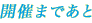
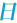
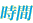
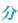
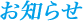
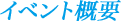
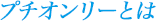

0000000

- 2014.10.1
- サークルリストを公開しました。
- 2014.7.20
- ゼルアメ18禁アンソロジー『やめないで！ゼルガディスさん』をアンソロジー応援ページに掲載しました。

- イベント名
- スレイヤーズプチオンリー『混沌鍋パ』
- 開催日時
- 2014年10月12日（日)
- 開催場所
- 東京ビッグサイト
（COMIC CITY SPARK 9内） - 主催
- パイン会

プチオンリーは、参加者主導企画として、 既に多くのCOMIC CITYで開催されている新しいタイプのオンリーイベントです。
他にヤドカリイベントとも呼ばれています。提案者(発起人)が好きなジャンル(カップリング等)である時期のオールジャンルイベントに一斉参加を呼びかけ・提案するイベント内イベント企画のことを指します。
スペースに共通のポップを飾ったり、配置マップ・記念本の発行なども行われ、オールジャンル即売会でありながら、小さなオンリーイベントの雰囲気を楽しめます。